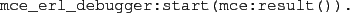

An algorithm determines the particular state space exploration strategy
used by McErlang.
If no algorithm is specified, the default one is @mce_alg_safety@.
The result of a model checking run is a ``result value'' which can be
inspected using the functions in the @mce_result@ module.
The result value is normally stored in the process dictionary under
the key @result@.
If the result represents an error (a failed monitor, a process
died normally due to an exception) the behaviour of the program
up to the point of the error can be studied in further detail
in the McErlang debugger using the command:

Subsections
2010-07-05